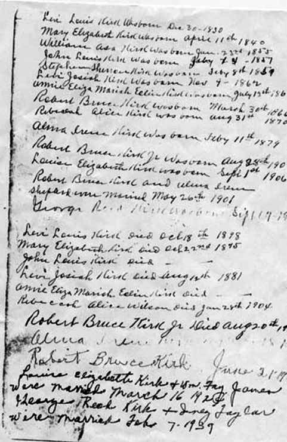

Levi Josiah (Joseph) Kirk
or
Lewis J. Kirk
Lockesburg, Arkansas
Son of
M.E. & L.L. Kirk
Born: November 9, 1862
Died: August 12, 1881
Waiting Till The Resurrection Day


The history of the discrepancy about this gravesite:
1. Sevier County courthouse records show the name as Lewis Kirk with the same birth and death dates.
2. I received a family worksheet from Ms. Virginia Poe (Thomas) also known as "Ginger" who is currently living in Dallas, Texas. Her Grandmother was Mary Emily Thomas (Kirk) who was the daughter of William Asa Kirk and Mary Helen Kirk (Marsh). The worksheet that Ms. Poe provided listed the name as Levi Joseph Kirk with the same birth and death dates.
3. The following page was taken from the family Bible of George Reed Kirk who's father was Robert Bruce Kirk Sr. the son of Levi L. Kirk and Mary Elizabeth Kirk (Doggett). Notice the 6th name from the top is that of Levi Josiah Kirk born on Nov 9, 1862. The 19th name from the top is also that of Levi Josiah Kirk died on Aug 12, 1881. This information correlates with the dates that were engraved on the damaged tombstone.
